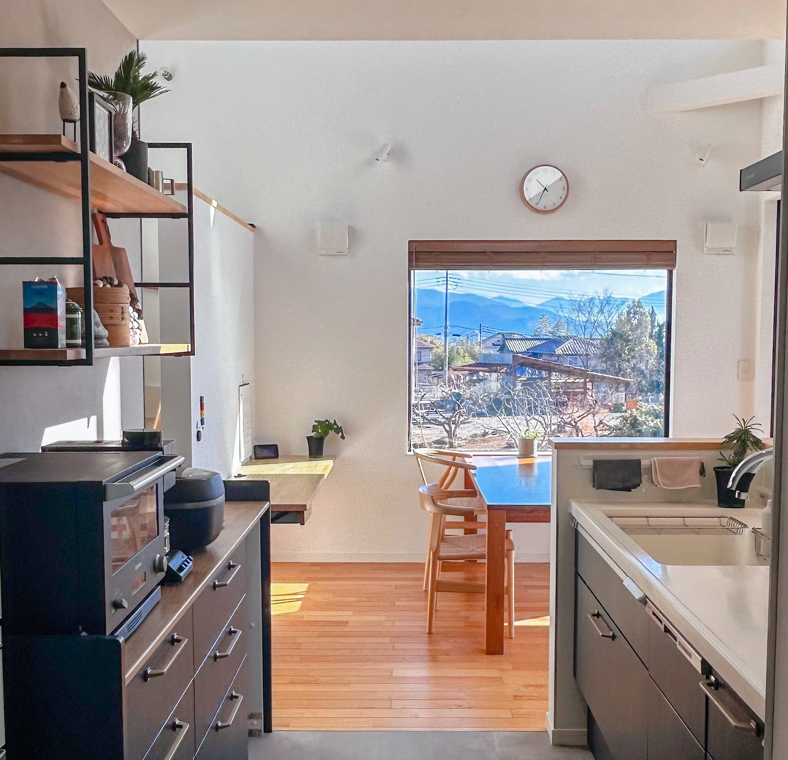
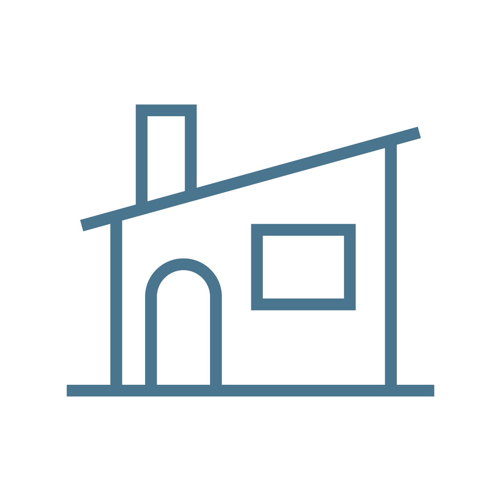
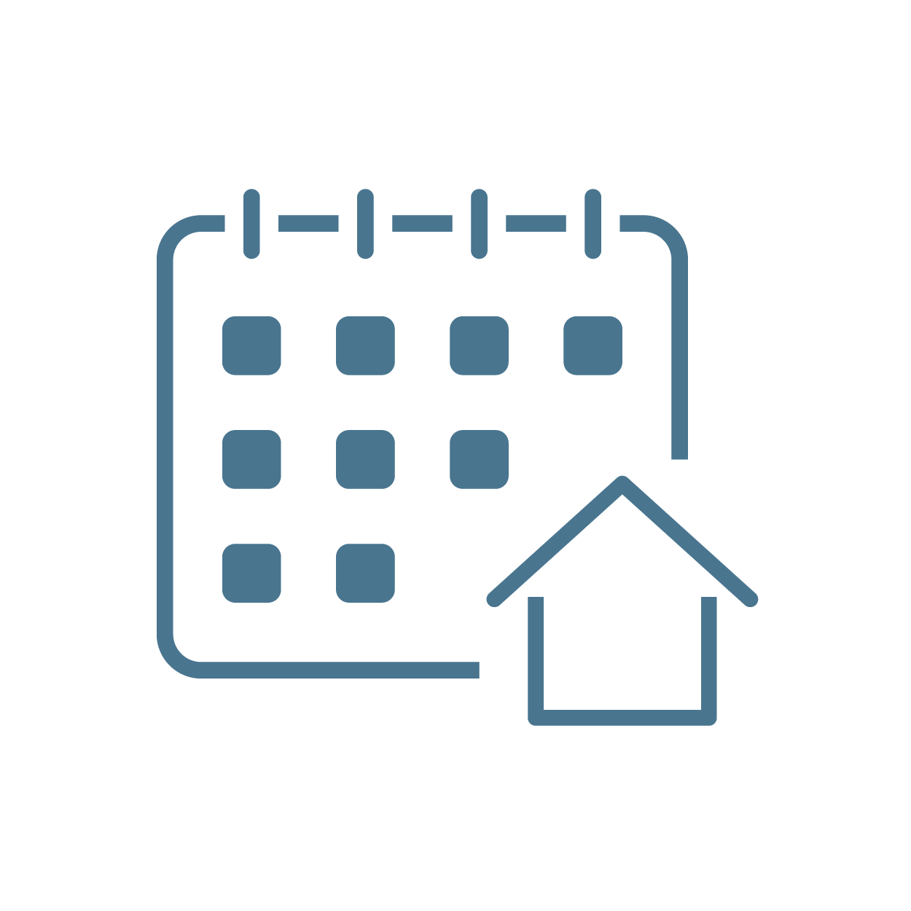
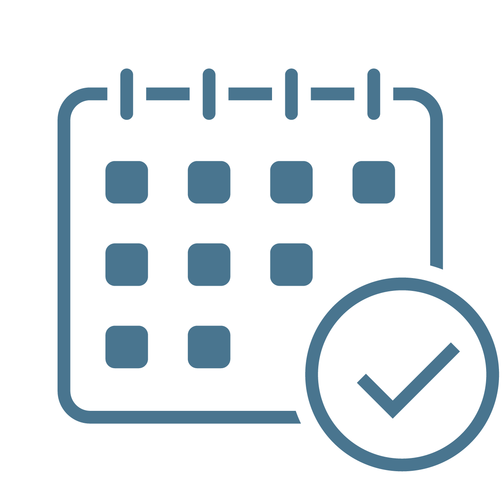
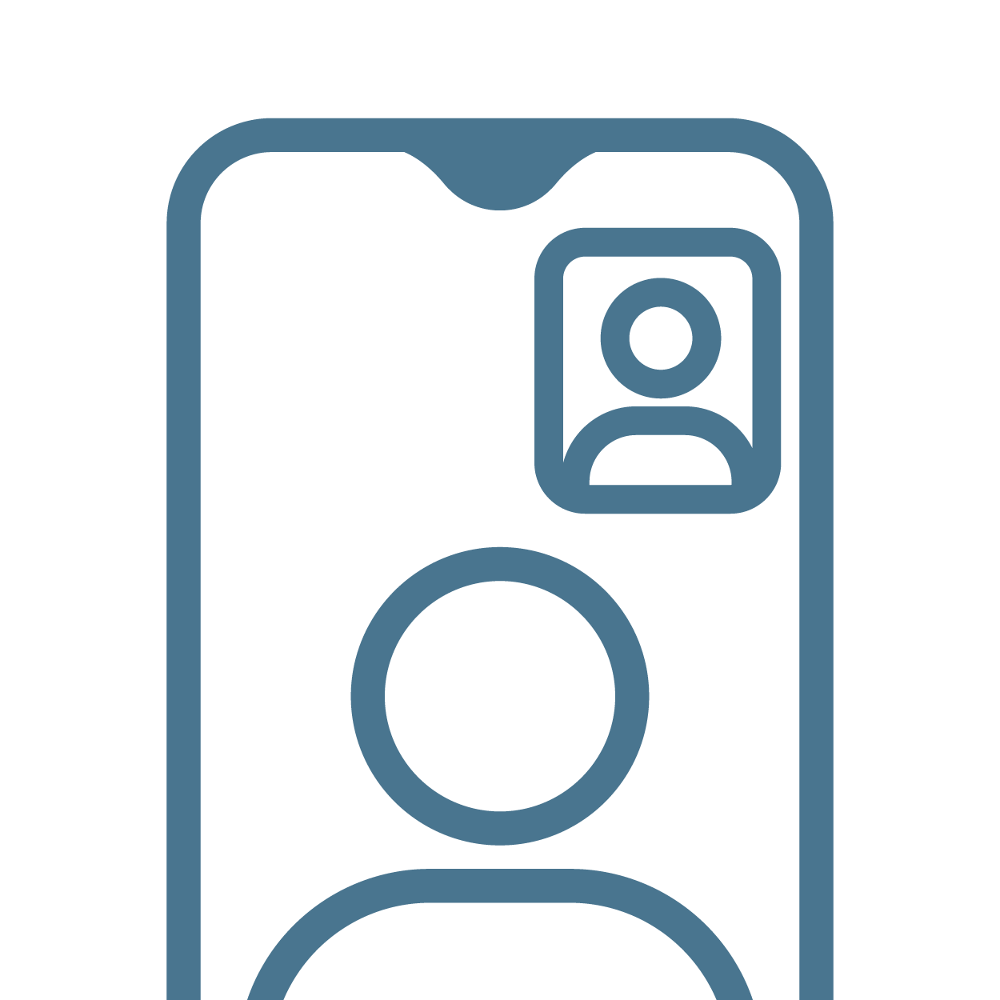
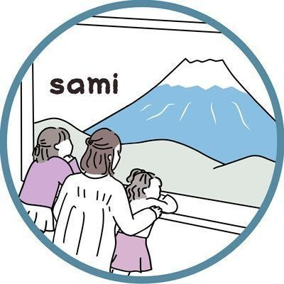

「 暮らしごこち 」
にこだわる家づくり
『 心地いい 』
を見つけるお手伝い
こんなお悩みありませんか？
-
何か違う気がして不安…
でも、 “言葉にできない” -
投稿をたくさん保存したけど、
“どの情報を信じたらいいか”
分からない -
夫と工務店さんに否定される
気がして“相談しづらい”
このままでは…
“ 後悔が多く残る家 ”
が完成してしまうかもしれません。でも…
『 家族みんなが心地いい家 』
を叶えたいですよね。これらのお悩み、あなたの想いを整理することで解決できます！
「でも…想いを整理するってどうしたらいいの？」と思ったあなたに向けたサービスが、
さみの 家づくり相談室 です。

Service
サービスの特徴
-

施主目線で寄り添うから、
友人のように話せる施主経験者だからわかるリアルな視点で、家づくりのモヤモヤを整理。
-
オンライン完結！
独自シートで理想を深掘りどこからでも相談OK！オンラインで気軽に参加。
オリジナルのコンセプトシートを使い、大切にしたい暮らしの「軸」を明確に。 -

“ちょっと相談”から“1ヶ月伴走”
まで幅広く対応ニーズに合ったプランを選べます。施主経験者だからこそ、工務店との関係を大切にしながら、家づくりの悩みをすっきり解決！
Flow
ご相談の流れ
-

STEP1
LINEに登録
プラン選択・日程予約 -
STEP2
ヒアリングシート
記入 -

STEP3
オンライン相談
お支払い
Voice
お客様の声
-
家づくりの悩みを解決してくれる、
心強い存在設計士さんの提案に「これがいい！」って納得できる提案がないのに、気をつかって言えず。一人で悩んで、誰にも相談できなくて悶々としてました😕
さみさんに聞いてもらったり、アドバイスしてもらったことで、納得できる設備や配置にできそうです✨
真剣に向き合いアドバイス盛り盛りしてくれて、さみさんに感謝、感激しております🥺🧡さみさんをお家づくりの伴走者として一家に一人欲しいです🥺
-
提案された間取りを、
家族に合わせて改善できた家族構成や生活スタイルを丁寧にヒアリングしていただいたおかげで、とっても使いやすい間取りになりました！
何から決めればいいかわからない状態でしたが、家に何を求めるかを一緒に考えてくださり、今の家にどのような使いずらさがあるかを一緒に見つけてくれて、新居に活かせるところをたくさん提案していただけました。
親身になってアドバイスいただいたおかげで、より良い家になりました！
-
悩みが増え続けていたけど、
気持ちが軽くなった情報を調べれば調べるほど悩みが増えていくような感覚になっていました。夫婦で何度も話し合った結果のはずなのに、他から色々言われると不安になり悩んでいました。そんな自分すらも嫌になっていました。
間取りについて細かいところまで気づいてくれ、アドバイスをいただきとても参考になりました。
家づくりは想像以上に大変で、夫との熱量の違いなど精神的に辛くなることも多いのですが、なかなか相談できる人がいませんでした。
さみさんに相談して、ものすごく気持ちが軽くなりました。本当にありがとうございました🥰💕
Q & A
よくあるご質問
-
どのようなプランがありますか？
30分、60分、1ヶ月 の3種類あります
- 30分プランまずは気軽に相談したい方へ
頭の中を整理して、次の一歩をクリアに - 60分プランじっくり話したい方へ
家づくりの方向性を見極める時間に - 1ヶ月プラン常に疑問を聞けるようにしたい方
じっくり伴走、納得の家づくりへ
※ 詳細は公式LINEよりご確認ください。
-
具体的にはどのような相談ができますか？
- 間取り関連
- 動線や収納が使いやすいか確認してほしい
- 家族にとって快適な生活ができる工夫を教えて
- コストをさらに減らせるところがあるか見てほしい
- その他
- 工務店からの提案に納得いっていない。いい伝え方ない？
- 悩みが増え続けていて、全てがわからない…
様々な悩みに寄り添って、解決策をご提案します。「こんなことで相談していいのかな？」と思うようなことも安心してお話しください。
-
相談のメリットは何ですか？
お客様からいただいた声をご紹介します。
- 相談を通じて気持ちを整理でき、自己嫌悪から前向きな気持ちに切り替えられた。
- 周囲へ気軽に相談できないストレスがあったが、話すことで気持ちが軽くなった。
- 優先順位が明確になり、平屋よりも2階建てが適していると気づけた。
-
家づくり終盤です。
まだ相談できますか？家づくりの開始前から引き渡し後まで、どの段階の方にもご利用いただけます。
すべての過程を経験しているため、相談者さんに合わせたご提案や回答をいたします。
Vision
想い
私が大切にしているのは
「 暮らしごこち 」
業者と私の間で、味方になってくれる
通訳のような人が欲しい。
家づくり当時に私が感じたことです。
- あなたが大切にしたいことを引き出すお手伝いと、施主目線での第三者として気軽に相談できる存在でありたい。
そんな想いで生まれたサービスです。
一人で抱え込んでいる方、
私とゴール目指しましょう。
まずはお気軽にご相談ください！
